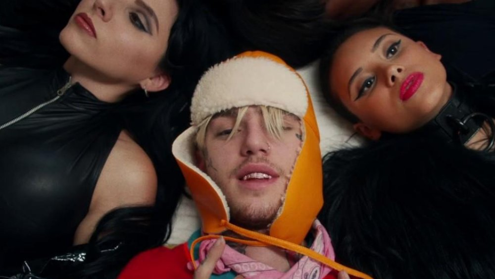

DEPRESION Y PROBLEMAS CON LAS DROGAS
El cantante Lil Peep tenía depresión y problemas con las drogas, de hecho una de las drogas consumidas el día de su fallecimiento, era un tipo de fármaco que se receta para la depresión, xanax o trankimazines. No es raro que en sus canciones se escuchen frases como “tengo el presentimiento de que no voy a estar aquí el año que viene” (The Way I See Things), “mi hora ha llegado, y te lo voy a dejar claro, te quiero” (Haunt U). También, en algunas entrevistas y varias de sus canciones, afirmaba que no sabía realmente quién era “ni siquiera me conozco a mi mismo, ni me puedo controlar” o el momento en que le preguntaron quién era y respondió entre risas que no lo sabía.Gustav no estaba medicado para la depresión. Si bien los que lo rodeaban insistieron, él no quiso y optó por fumar marihuana y cualquier otra droga que se le presentara. En su última entrevista antes de su muerte con Zane Lowe, Peep confesó que su depresión empeoraba diciendo "Las cosas simplemente empeoran.
RECHAZO DE LIL PEEP DE LA CAJA
Cuando era adolescente en Long Beach, Nueva York, Lil Peep notó una brecha entre los ricos y los pobres en su comunidad. En el Lil Peep Memorial celebrado en diciembre de 2017, su madre, Liza Womack, habló sobre cómo esta división comenzó a dar forma a su hijo: "Gus se cansó de ese mundo. Lo rechazó y se negó a ser echado en una caja". "Cuando se encerró en el garaje y se hizo su primer tatuaje, comenzó a rechazar la caja públicamente".
No está claro cuánto de esto fue aislamiento autoimpuesto o si Lil Peep fue exterminado de otros de su edad, pero su madre vio un cambio en el rapero durante su adolescencia. "La gente que había sido su amiga terminó siendo su amiga", dijo Womack más tarde. horca. "Estaba bajo y tenía ganas de **. Tenía cortinas negras en su habitación, estaba acostado en la cama la mayor parte del tiempo y había cenizas sucias por todas partes".
Más tarde, Lil Peep reflexionaría sobre sus sentimientos sobre Long Beach en la canción "Cry Alone", con letras como "Odio a todos en mi ciudad natal / Quiero quemar mi vieja escuela secundaria cuesta abajo". Incluso después de que el rapero dijo tanto tiempo y se fue a la soleada California para enfocarse en la música a tiempo completo, no solucionó lo que estaba sintiendo. "Creo que fue triste cuando se fue a California", dijo Womack horca. "Estaba solo y muerto de miedo".
LA LUCHA DEL RAPERO CON LA SALUD MENTAL
Bautizado "el milenio ansioso por excelencia" por XXLLil Peep sufría más que una simple ansiedad. La lucha del rapero con la ansiedad y la depresión estaba bien documentada, tanto por él como por quienes lo rodeaban.
De acuerdo a Piedra rodante, "desarrolló una ansiedad intensa alrededor de los 16 años, a veces vomitando por la mañana al pensar en ir a la escuela". Mientras tanto, el tema de la depresión se extendería en las letras de Lil Peep, una de las principales razones por las que logró conectarse con los fanáticos. A menudo hablaba de dolor y pensamientos suicidas en canciones como "OMFG", con letras como "Solía suicidarme / surgió, todavía quiero suicidarme / Mi vida no va a ninguna parte / Quiero que todos sepan que no me importa ellos mismos ".
Lil Peep habló sobre su salud mental en una entrevista con horcay dijo: "Sí, es grave. Sufro de depresión y algunos días me levanto y pienso: Joder, desearía no haberme despertado. "Añadió:" Algunos días estaré muy deprimido, pero no podrás decir eso porque no expreso mi lado en las redes sociales. Es mi lado que expreso a través de la música. Es mi canal para dejar salir todo. "
Si usted o alguien que conoce tiene pensamientos suicidas, puede llamar a la Línea Nacional de Prevención del Suicidio al 1-800-273-TALK (8255) o enviar a CASA a la Línea de Texto de Crisis al 741741.
LIL PEEP SE SINTIO BAJO PRESION
Muchos artistas enfrentan la intensa fama a medida que ascienden a la cima, pero es difícil no creer que Lil Peep haya tenido sus hombros más que su parte justa. Sintiendo que tenía que apoyar a sus amigos, también se vio atrapado en un tira y afloja entre su pasado y su futuro: el colectivo GothBoiClique y su independencia.
De acuerdo a Piedra rodanteFirst Access Entertainment creía que Lil Peep sabía que tenía que abandonar el grupo antes, y la directora ejecutiva, Sarah Stennett, afirmó que cuando firmó el contrato, "aceptó efectivamente que no era parte de GothBoiClique, que estaba solo. Sabía que no podía llevar a todos con él ". Sin embargo, el miembro de GBC Mackned pensó que la etiqueta era el problema:" Peep debería abandonar First Access. Nos lo dijo muchas veces ".
Finalmente, la etiqueta parece haber ganado. Antes de que Peep comenzara el lanzamiento de su álbum en solitario, invitó a los miembros de GBC a unirse a él para la parte norteamericana. documental Todos lo son todo sugiere que la invitación tenía la intención de ser una transmisión final del grupo. De acuerdo a Stereogum"Planeaba abandonar la carretera principal de GothBoiClique por razones relacionadas tanto con su carrera como con su salud".
Justo un día antes de su prematura muerte, Lil Peep habló sobre la presión que sintió al tratar de satisfacer a todos en Instagram, y escribió en parte: "Yo solo (quiero) ser todos".
LIL PEEP Y BELLA THORNE
 Lil Peep también salió con una actriz, cantante y ex modelo de 22 años. Annabella Avery (Bella) Thorne por un corto tiempo en 2017. El aturdidor es conocido por aparecer en la serie de televisión. Mi propio peor enemigo , Gran amor y canal Disney serie Muevelo .
Bella recientemente apareció en los titulares por su autobiografía reveladora, La vida de un aspirante a magnate: desorden mental , donde comparte que se identifica como pansexual y ha superado el abuso.
Bella y Lil Peep fueron vistos besándose en Los Ángeles en septiembre de 2017, meses antes de su muerte. Ella abordó su dolor en las redes sociales, con un tweet que decía: 'Peep, merecías más de la vida. La vida no hizo justicia a tu grandeza.
Ella recientemente publicado un homenaje a Lil Peep, diciéndole a casi 22.5 millones de fanáticos de Instagram que realmente extraña su presencia.
Lil Peep también salió con una actriz, cantante y ex modelo de 22 años. Annabella Avery (Bella) Thorne por un corto tiempo en 2017. El aturdidor es conocido por aparecer en la serie de televisión. Mi propio peor enemigo , Gran amor y canal Disney serie Muevelo .
Bella recientemente apareció en los titulares por su autobiografía reveladora, La vida de un aspirante a magnate: desorden mental , donde comparte que se identifica como pansexual y ha superado el abuso.
Bella y Lil Peep fueron vistos besándose en Los Ángeles en septiembre de 2017, meses antes de su muerte. Ella abordó su dolor en las redes sociales, con un tweet que decía: 'Peep, merecías más de la vida. La vida no hizo justicia a tu grandeza.
Ella recientemente publicado un homenaje a Lil Peep, diciéndole a casi 22.5 millones de fanáticos de Instagram que realmente extraña su presencia.
¿QUIEN ERA LA MAMA DE LIL PEEP?

Su madre, Liza Womack, era maestra de primer grado; y su padre, Karl Johan Åhr, profesor de universidad.
ABUELOS DE LIL PEEP


Jack Womack, un profesor marxista de historia en Harvard
Andrea Villanueva.Maestra en Nueva York
HERMANO DE LIL PEEP
 Karl Ahr Profesor de universidad
Karl Ahr Profesor de universidad
QUE ENFERMEDADES TENIA LIL PEEP
El cantante tenía depresión y problemas con las drogas, de hecho una de las drogas consumidas el día de su fallecimiento, era un tipo de fármaco que se receta para la depresión, xanax o trankimazines
EL EFECTO DE LOS TATUAJES DE LIL PEEP
Si bien los tatuajes de Lil Peep probablemente le proporcionaron una gran cantidad de miradas laterales de extraños, fue el juicio lo que lo inspiró en gran medida a llevar el arte corporal hasta el momento, especialmente cuando se trataba de sus tatuajes faciales. En una entrevista con GQ, explicó por qué se hizo su primer tatuaje facial, un corazón roto debajo del ojo izquierdo, en 2015.
"Realmente soy extrovertido", dijo Lil Peep. "Fue un poco como una presión para mí tener éxito con la música que hice, porque puede hacer que sea más difícil conseguir un trabajo cuando tu rostro está cubierto de tatuajes". El artista musical sabía que no a todos les gustaría sus tatuajes y su arreglo algo caótico, y ciertamente lo hizo.
Pero como dijo la madre en el memorial: "Cuantos más tatuajes y piercings recibió, más lo trataron como un extraño y más se convirtió en un extraño. Ser un extraño, un rechazo, lo lastimaba". Esto también parece ser de diseño. De acuerdo a el guardián"Siempre se había sentido como un extraño, y quería entender cómo era sentirse como una minoría". Los tatuajes no solo le dieron eso, sino que también le permitieron a Lil Peep un palo de medir para "detectar la diferencia entre las personas que vieron los tatuajes y las personas que lo vieron".
LIL PEEP ERA UNA DIVORCIADA
 Si bien Lil Peep era generalmente un libro abierto durante las entrevistas, el tema de su padre era uno que evitaba regularmente. Sus padres se divorciaron cuando tenía 14 años, y se cree que tiene un gran impacto en él. En el documental de 2019, Todos lo son todo, la madre del músico reveló que fue su hijo quien primero le dijo que su esposo era infiel horca). Aún así, cuando le preguntaban a Lil Peep sobre su padre, a menudo cambiaba de tema.
De acuerdo a Piedra rodante"Peep rara vez hablaba de su padre, un profesor de historia, más allá de dejar en claro que no tenía una relación real con él después del divorcio". Durante una entrevista con horca, Se le preguntó a Lil Peep sobre su padre dejando a la familia, causando que "los ojos se dispararan al suelo". En respuesta, el rapero simplemente mencionó que no había "hablado con él desde entonces". Añadió: "Realmente no tengo nada con mi papá".
Es posible que la audiencia haya recibido los únicos comentarios sin reservas de Peep sobre su padre en un video corto en el que improvisó la letra de "Bienvenido al desfile negro" de My Chemical Romance. En el clip, cantó desde la perspectiva de su padre: "Dijo: 'Hijo, cuando seas grande, te dejaré, y luego ganarás mucho dinero en dos años'.
Si bien Lil Peep era generalmente un libro abierto durante las entrevistas, el tema de su padre era uno que evitaba regularmente. Sus padres se divorciaron cuando tenía 14 años, y se cree que tiene un gran impacto en él. En el documental de 2019, Todos lo son todo, la madre del músico reveló que fue su hijo quien primero le dijo que su esposo era infiel horca). Aún así, cuando le preguntaban a Lil Peep sobre su padre, a menudo cambiaba de tema.
De acuerdo a Piedra rodante"Peep rara vez hablaba de su padre, un profesor de historia, más allá de dejar en claro que no tenía una relación real con él después del divorcio". Durante una entrevista con horca, Se le preguntó a Lil Peep sobre su padre dejando a la familia, causando que "los ojos se dispararan al suelo". En respuesta, el rapero simplemente mencionó que no había "hablado con él desde entonces". Añadió: "Realmente no tengo nada con mi papá".
Es posible que la audiencia haya recibido los únicos comentarios sin reservas de Peep sobre su padre en un video corto en el que improvisó la letra de "Bienvenido al desfile negro" de My Chemical Romance. En el clip, cantó desde la perspectiva de su padre: "Dijo: 'Hijo, cuando seas grande, te dejaré, y luego ganarás mucho dinero en dos años'.
EL ALFRITION
Cuando apareció Lil Peep e intentó ganarse la vida con la música, se mudó entre diferentes ciudades y alojamientos. en Todos lo son todo, la compasión del músico se exhibió por completo mientras el documental detallaba cómo trajo a sus amigos. De acuerdo a GQ, la antigua celebridad sin hogar tenía la intención de compartir el alquiler con sus amigos cuando se mudaron a una posición en cuclillas en Skid Row, pero pagaría regularmente su parte del alquiler.
Después de firmar su primer acuerdo con First Access Entertainment, Peep se mudó a su propio espacio en Echo Park, Los Ángeles, pero sus amigos lo siguieron. De acuerdo a Piedra rodante, "El sitio se convirtió en un campo de refugiados virtual para artistas de SoundCloud". Las fiestas eran frecuentes y las telas eran geniales. "Se sintió culpable de haber sido el primero en llegar a la cima muy rápidamente", dijo su amigo y compañero, Wicca Phase Springs Eternal, "y como resultado fue demasiado acogedor".
Sin embargo, First Access quería a Peep en un entorno más estable, por lo que lo trasladaron a Londres. "Era un ambiente muy diferente", dijo la directora ejecutiva Sarah Stennett Piedra rodante. "No hubo caos. Siempre me aseguré de que teníamos comida para él en la nevera … Nadie acababa de llegar". Desafortunadamente, no pasó mucho tiempo antes de que Peep comenzara a luchar para separarse de sus amigos.
LAS MISTERIOSAS PREDICCIONES DE LIL PEEP
 El tema mórbido de morir joven ha sido abordado por muchas generaciones de músicos. Por ejemplo, Kurt Cobain, cantante principal de Nirvana y miembro del fatídico Club 27, quería llamar al tercer álbum de la banda, Me odio y quiero morir. Desde su propia predicción de la muerte, su estética y herencia han crecido más que la vida, especialmente entre la comunidad de rap SoundCloud, no muy diferente de Lil Peep, quien desde entonces se ha convertido en un símbolo de su generación. En la canción "Legends" de Juice World, un tributo a Peep y XXXTentacion, pregunta: "¿Qué es el Club 27? No pasaremos 21". Trágicamente, Juice Wrld también murió a los 21 años en 2019.
Las letras de Peep ahora suenan como proféticas, con canciones como "Life is Beautiful" y "Let Me Bleed" que hablan de la inevitabilidad de la muerte. En una publicación de Instagram compartida el día antes de su muerte, Peep escribió: "¿Quizás no quiero morir joven y quiero ser feliz? Qué alegría siempre tengo felicidad durante unos 10 segundos y luego se ha ido. Lo siento mucho de esto ". Preguntado por Mont Realidad cómo podría ser su vida como un hombre de 86 años. Peep dijo con una sonrisa: "Estoy muerto como un f ** k. Lo llamé. Ya me fui". Añadió: "S ** t puede cambiar, pero en este momento estoy aquí haciendo música, ya sabes. El ** del que estoy hablando es real, así que … no hay mucho que perder en este momento".
El tema mórbido de morir joven ha sido abordado por muchas generaciones de músicos. Por ejemplo, Kurt Cobain, cantante principal de Nirvana y miembro del fatídico Club 27, quería llamar al tercer álbum de la banda, Me odio y quiero morir. Desde su propia predicción de la muerte, su estética y herencia han crecido más que la vida, especialmente entre la comunidad de rap SoundCloud, no muy diferente de Lil Peep, quien desde entonces se ha convertido en un símbolo de su generación. En la canción "Legends" de Juice World, un tributo a Peep y XXXTentacion, pregunta: "¿Qué es el Club 27? No pasaremos 21". Trágicamente, Juice Wrld también murió a los 21 años en 2019.
Las letras de Peep ahora suenan como proféticas, con canciones como "Life is Beautiful" y "Let Me Bleed" que hablan de la inevitabilidad de la muerte. En una publicación de Instagram compartida el día antes de su muerte, Peep escribió: "¿Quizás no quiero morir joven y quiero ser feliz? Qué alegría siempre tengo felicidad durante unos 10 segundos y luego se ha ido. Lo siento mucho de esto ". Preguntado por Mont Realidad cómo podría ser su vida como un hombre de 86 años. Peep dijo con una sonrisa: "Estoy muerto como un f ** k. Lo llamé. Ya me fui". Añadió: "S ** t puede cambiar, pero en este momento estoy aquí haciendo música, ya sabes. El ** del que estoy hablando es real, así que … no hay mucho que perder en este momento".
QUIEN ERA EL MEJOR AMIGO DE LIL PEEP
 BEXEY Se conocieron en un concierto que hicieron juntos con XXXTENTASION
BEXEY Se conocieron en un concierto que hicieron juntos con XXXTENTASION
UNA HISTORIA PRUDENTE
El tema de las drogas nunca estuvo lejos de la vida pública o privada de Lil Peep. Si bien sus frecuentes letras hablaban del uso excesivo de drogas, se sabía que su cuenta de Instagram lo documentaba. Cuando se le preguntó sobre su uso de drogas en Sin puente podcast, el músico dijo: "Soy bastante malo con ellos … Es como las cosas que la gente me ofrece. Simplemente voy con eso. Eso es lo que haremos esta noche".
Sin embargo, la familia de Lil Peep no está convencida de que la medicina haya sido una parte tan importante de su vida. "En casa, no consumía drogas como esta", dijo su madre. Piedra rodante. "No sabía hacer cosas malas". El hermano de Peep, Oskar, compartió una creencia similar en una entrevista con personas: "Mi hermano no tomaba cinco píldoras Xanax todos los días. Pero quería tomarlas y luego publicó en Instagram al respecto".
El día antes de su muerte, eso es exactamente lo que hizo Lil Peep. En una publicación de Instagram eliminada de la página, el rapero le dijo a los fanáticos que "tomó seis Xanax". También publicó otro video de sí mismo arrojando lo que parecían ser varias píldoras Xanax en su boca. De acuerdo a TMZ, una combinación aleatoria de Xanax y Fentanilo finalmente condujo a su muerte.
LIL PEEP SUS TATUAJES Y SU SIGNIFICADO
Gustav Elijah Åhr, más conocido por su nombre artístico Lil Peep, fue un rapero, cantante, productor musical y modelo estadounidense de origen sueco. Se hizo muy conocido por tener un fuerte estilo emocional en sus canciones. Gustav se mudó a California a sus 17 años, donde grabó sus primeros álbumes de estudio
1.TATUAJE INSPIRADO POR MAMA
Tatuaje:Antebrazo y su fecha de nacimiento en su muñeca
Significado:. Lil Peep siempre ha amado a su madre. Quería hacerse su primer tatuaje, así que consiguió las iniciales y la fecha de nacimiento de su madre para que no se enojara con él. Tenemos que decir que fue muy agradable e inteligente de Lil Peep.
2.PEEP TATUAJE
Tatuaje:Brazo Derecho
Significado:Peep ha sido su apodo desde la infancia. Su madre lo llamó Lil Peep. No solo se hizo famoso por ese nombre, sino que también se tatuó la parte superior del brazo derecho.
3.TATUAJE DE CIEMPIES
Tatuaje:Antebrazo
Significado:Muchas personas pueden encontrar que los ciempiés dan miedo, pero pueden hacer un gran diseño de tatuaje. Lil Peep encontró a los temibles ciempiés y los odió. Pero encontró una manera de superar el miedo a los ciempiés y se tatuó uno en el antebrazo.
4.TATUAJE DE CUMPLEAÑOS

Tatuaje:Estomago
Significado:El tatuaje en su cuerpo nos dice lo divertido y la personalidad emo que tenía Lil Peep. Curiosamente, también nació la noche de Halloween, es decir, el primero de noviembre. Fecha de nacimiento 11-1 se puso en el estómago en forma de tatuaje.
5.TATUAJE DE HALLOWEEN
Tatuaje:Antebrazo Izquierdo
Significado:Celebrar su cumpleaños de Halloween con un tatuaje con la fecha de nacimiento de Lil Peep no fue suficiente. Tenía varios tatuajes en su cuerpo para Halloween, después de todo, ¿por qué no debería? Detrás de su oreja había estrellas empapadas, murciélagos y otras cosas inquietantes. Lil Peep también tenía calabazas aterradoras con llamas en su antebrazo izquierdo.
6.TATUAJE DIMINUTO
Tatuaje:En la pierna
Significado:Este es otro tatuaje de Lil Peep dedicado a su amada persona. Meep era un perro Lil Peep, a quien él y su novia compraron y cuidaron juntos Le dijo a Meep su hijo y lo amaba tanto que se lo tenía tatuado en la pierna.
7.TATUAJE DE LISA SYMPSON EN LA GARGANTA
Tatuaje:En el cuello
Significado:Aquí hay un tatuaje muy interesante que Lil Peep se puso en el cuello. El tatuaje es interesante no solo porque incluye a nuestro personaje de dibujos animados favorito de todos los tiempos, «Lisa Sympson», sino también porque tiene un significado especial para Lil Peep. El tatuaje de Lisa en el cuello de Lil Peep gritaba: «¡¡Mami!!» Este tatuaje era un recordatorio de cómo una vez había echado de menos a su madre y la había llamado cada vez que sucedía algo malo o estresante en su vida.
8.TATUAJE DE LISA SYMPSON EN LA GARGANTA
Tatuaje:ARTICULACIONES
Significado:Como todos los demás artistas, Lil Peep tuvo que viajar mucho, pero extrañaba mucho su casa y a su madre. Por eso se tatuó las letras «Nostalgia» en sus articulaciones.
9.ANARQUIA DEL TATUAJE ROJO EN LA CARA
Tatuaje:Cachete Izquierdo
Significado:Para Lila Peppa,los tatuajes eran algo tan normal que no necesariamente tenía que tener un tatuaje significativo todo el tiempo. La anarquía roja en su cheque era solo una idea aleatoria que tenía para un tatuaje.
10.TATUAJE DE CORAZON ROTO
Tatuaje:Ojo Izquierdo
Significado:Lil Peep tenía este pequeño tatuaje de corazón roto debajo del ojo izquierdo, justo encima del tatuaje rojo de la anarquía. Se hizo este tatuaje en 2015 cuando estaba deprimido y no se sentía amado.
11.TATUAJE EN LA FRENTE (AMULETO)
Tatuaje:EN LA FRENTE
Significado:Lil Peep era un hombre sencillo y directo, al igual que la mayoría de sus tatuajes y sus significados. Tenía una pequeña herradura tatuada en la frente entre las cejas. El tatuaje dependía de él para disfrutar de la felicidad.
12.TATUAJE DE CABEZA DE CALAVERA
Tatuaje:CRANEO DERECHO DE LA CABEZA
Significado:Lil Peep siempre ha querido un tatuaje del famoso tatuador Ed Hardy. Lil Peep conoció a Ed Hardy en Inglaterra y se tatuó el cráneo en el lado derecho de la cabeza. Pensó que un tatuaje de calavera le daría una imagen agradable e interesante a su cabeza..
13.TATUAJE DE BANDERA DE CARRERA EN LA CABEZA

Tatuaje:CRANEO IZQUIERO DE LA CABEZA
Significado: Lil Peep optó por otro tatuaje en la cabeza. Tenía esta bandera de carreras con humo rojo tatuada en el lado izquierdo de su cráneo. No era un tatuaje bonito porque dolía mucho.
14.TATUAJE CONSEGUIR CAKE DIE YOUNG
Tatuaje:EN LA FRENTE
Significado:Los tatuajes eran una parte importante de la personalidad de Lil Peep. A medida que crecía, también lo hacía la cantidad de tatuajes en su cuerpo. Un día se despertó con un tatuaje que tenía Get Cake Die Young en la frente. No tenía idea de cómo se había hecho el tatuaje y no recordaba nada al respecto. Lil Peep aceptó felizmente el tatuaje. Aún más interesante es que este tatuaje sin sentido realmente resultó ser cierto para él porque murió joven..
15.TATUAJE DE UN BEBE LLORANDO
Tatuaje:EN LA CARA
Significado:Este es otro de los tatuajes interesantes y significativos de Lil Peep. Se hizo este tatuaje que dice Cry Baby en el lado derecho de su frente. Se hizo este tatuaje para recordarse a sí mismo que no actuaría como si estuviera llorando y sería un desagradecido porque había muchos desafortunados.
16.TATUAJE TRIPAL
Tatuaje:BRAZO DERECHO ENCIMA DEL TATUAJE ESTADO DE ANIMO
Significado:Los diseños tribales son clásicos y crean tatuajes increíbles. Lil Peep tenía este increíble tatuaje tribal negro en su brazo derecho, justo encima del tatuaje del estado de ánimo..
17.TATUAJE DE CRUZ

Tatuaje:HOMBRO DERECHO
Significado:Lil Peep creía en Dios, por lo que tenía un tatuaje de cruz brillante en su hombro derecho..
18.TATUAJE DE PANTERA ROSA
Tatuaje:EN EL LADO IZQUIERDO
Significado:De todos los tatuajes dulces, divertidos e interesantes que tenía Lil Peep, encontramos este tatuaje de Pink Panther y la historia detrás de él divertida. Lil Peep se relajó con su novio en una playa veneciana mientras él tenía este tatuaje rosa-rosa tatuado en el lado izquierdo del tatuaje de Lisa. Pensó que haría algo diferente y divertido en la playa, y al final se mantuvo el tatuaje por aburrimiento..
19.TATUAJE DE PAPA EN EL PECHO
Tatuaje:EN EL PECHO
Significado:CONFIABA BEN DIOS.
20.TATUAJE DE UNA ROSA Y ESRELLA EN LA MEJILLA DERECHA
Tatuaje:MEJILLA DERECHA
Significado:LE GUSTABA LA ROSA Y LAS ESTRLLAS.
REDES SOCIALES
 Facebook
Facebook
 Instagram
Instagram
 YouTube
YouTube
 Twitter
Twitter
 TikTok
TikTok
SoundCloud
 spotify
spotify
 En 2015, Lanzo su primer mixtape llamado Lil Peep Part One, que genero 40 000 reproducciones en la primera semana, ganando popularidad con la cancion Star Shopping". La popularidad de Lil Peep siguio creciendo despues de lanzar "Beamer Boy" que lo llevo a actuar en directo por primera vez junto al colectivo de raperos y productores "Schemaposee" el 13 de febrero de 2016 en Tuczon (Arizona). Poco despues, lanzo su primer EP en solitario, Feelz y otro mixtape titulado Live Forever.En 2016 lanzó Crybaby junto a miembros de la banda GothBoiClique (GBC), y en septiembre de ese mismo año fue lanzado Hellboy, y su carrera se consolidó con canciones como "Girls" junto a Horsehead, y "OMFG" recaudando millones de reproducciones en los portales SoundCloud y YouTube, que incluso lo llevó a realizar su primera gira en solitario por Estados Unidos llamada "The Peep Show" desde abril hasta mayo de 2017.
En mayo de 2017, una banda lo acusó de infracción de copyright por incluir una parte de la canción LoveLetterTypewriter, cuyo uso no estaba autorizado, en su canción Hollywood Dreaming. Gustav comentó que solo demostraba algo de su amor con la muestra. El 2 de junio de 2017, anunció su álbum, Come Over When You're Sober, en su Instagram. Este álbum quedaría en lanzarse el 11 de agosto de 2017, pero se retrasó y el álbum salió a la luz el 15 de agosto de 2017. Después, Gustav anunció su gira para promocionar el álbum que comenzó el 2 de agosto de 2017 y finalizaría el 15 de noviembre de 2017 tras su fallecimiento. A la hora de su muerte, el repertorio del artista constaba de 19 álbumes, EPs, mixtapes y alrededor de noventa sencillos entre 2014 y 2017.
Después de su fallecimiento, se han lanzado once álbumes más. "Come Over When You're Sober Pt. 2" (2018), "Goth Angel Sinner" (2019), "Everybody's Everything" (2019), además de ocho re-lanzamientos de EPs, mixtapes y sencillos publicados entre 2015 y 2017.
En 2015, Lanzo su primer mixtape llamado Lil Peep Part One, que genero 40 000 reproducciones en la primera semana, ganando popularidad con la cancion Star Shopping". La popularidad de Lil Peep siguio creciendo despues de lanzar "Beamer Boy" que lo llevo a actuar en directo por primera vez junto al colectivo de raperos y productores "Schemaposee" el 13 de febrero de 2016 en Tuczon (Arizona). Poco despues, lanzo su primer EP en solitario, Feelz y otro mixtape titulado Live Forever.En 2016 lanzó Crybaby junto a miembros de la banda GothBoiClique (GBC), y en septiembre de ese mismo año fue lanzado Hellboy, y su carrera se consolidó con canciones como "Girls" junto a Horsehead, y "OMFG" recaudando millones de reproducciones en los portales SoundCloud y YouTube, que incluso lo llevó a realizar su primera gira en solitario por Estados Unidos llamada "The Peep Show" desde abril hasta mayo de 2017.
En mayo de 2017, una banda lo acusó de infracción de copyright por incluir una parte de la canción LoveLetterTypewriter, cuyo uso no estaba autorizado, en su canción Hollywood Dreaming. Gustav comentó que solo demostraba algo de su amor con la muestra. El 2 de junio de 2017, anunció su álbum, Come Over When You're Sober, en su Instagram. Este álbum quedaría en lanzarse el 11 de agosto de 2017, pero se retrasó y el álbum salió a la luz el 15 de agosto de 2017. Después, Gustav anunció su gira para promocionar el álbum que comenzó el 2 de agosto de 2017 y finalizaría el 15 de noviembre de 2017 tras su fallecimiento. A la hora de su muerte, el repertorio del artista constaba de 19 álbumes, EPs, mixtapes y alrededor de noventa sencillos entre 2014 y 2017.
Después de su fallecimiento, se han lanzado once álbumes más. "Come Over When You're Sober Pt. 2" (2018), "Goth Angel Sinner" (2019), "Everybody's Everything" (2019), además de ocho re-lanzamientos de EPs, mixtapes y sencillos publicados entre 2015 y 2017.